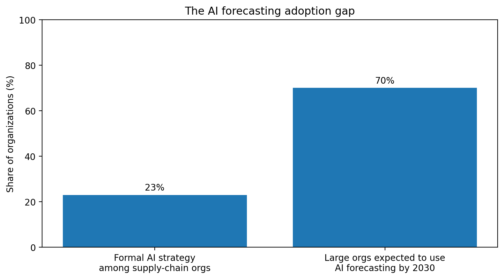

For the last decade, e-commerce teams have treated the storefront as the center of competitive advantage. We obsessed over homepage personalization, checkout flows, filters, product cards, and conversion-rate optimization.
And those things mattered. A slow checkout could kill a sale. Poor search could hide demand. Bad UX could make even a strong catalog feel weak. But the next advantage in e-commerce will not come primarily from prettier storefronts. It will come from inventory intelligence: the ability to know what to stock, where to stock it, when to replenish it, how to expose it to customers, and how to avoid promising what the business cannot fulfill.
The storefront can create desire. Inventory decides whether desire becomes revenue.
A customer does not experience inventory as a database problem. They experience it as:
- "This item is unavailable."
- "Delivery will take longer than expected."
- "Your order was partially cancelled."
- "The size you wanted is gone."
- "The item said available, but it was not."
Each of these moments breaks trust. And trust is expensive to rebuild.

IHL Group estimated that the global retail industry continues to lose about $1.73 trillion annually from inventory distortion — the combined cost of out-of-stocks and overstocks — even after $172 billion in reported improvements. A better storefront can help customers find products. But if the product is not actually available, discoverability becomes disappointment.
UX optimization has become table stakes
This is not an argument against storefront UX. But the strategic question is: where is the next step-change advantage?
Most serious e-commerce teams now understand the basics of digital UX. The next frontier is harder because it is less visible. It is not the button. It is the promise behind the button. Can the merchant actually fulfill the order? Can the warehouse pick it accurately? Can the inventory system sync across channels? Can the business avoid overselling? Can it replenish before demand spikes? That is inventory intelligence.
"Storefront UX is the expression layer. Inventory intelligence is the advantage layer."— TheGlocalPM
Inventory intelligence is where customer experience meets operational leverage
Inventory intelligence is not just stock tracking. It is a product capability made of several connected systems: real-time inventory visibility, demand forecasting, replenishment logic, supplier and inbound logistics data, warehouse capacity, marketplace catalog availability, substitution rules, delivery promises, and margin-aware merchandising.
This is especially important in grocery, q-commerce, and marketplace logistics. A fashion retailer can sometimes absorb a delayed shipment. A grocery platform cannot casually fail on milk, eggs, bread, baby products, or fresh items. In q-commerce, inventory accuracy is not only a backend metric — it is part of the core customer promise.
The AI shift: from dashboards to decisions
The old inventory stack was mostly reactive. Teams looked at reports, spotted stockouts, reviewed overstock, then adjusted manually. That works when demand is stable and assortments are small.
Modern e-commerce is different. Demand changes by channel, city, campaign, weather, creator trend, season, promotion, and customer segment. A product can be invisible for weeks and then spike overnight. McKinsey has noted that AI can reduce inventory levels by 20% to 30% through better demand forecasting and inventory optimization.

The opportunity is not just using AI to produce better reports. It is using AI to help the business make better recurring decisions: Which SKU should be replenished today? Which product should be promoted because supply is strong? Which delivery promise is safe to show at checkout? Which substitutions are acceptable for this specific customer? That is the shift from analytics to intelligence.
The next storefront may be controlled by agents, not brands
As AI shopping agents become more common, customers may increasingly ask assistants to compare, filter, recommend, and purchase products across retailers. In that world, the agent will care about structured product data, price, availability, delivery reliability, and fulfillment confidence. The merchant with cleaner inventory data, more accurate availability, better fulfillment promises, and stronger product metadata may win the sale before the customer ever lands on the website.
A practical roadmap for inventory intelligence
-
1
Stage 1 — Visibility Accurate, real-time inventory across stores, warehouses, darkstores, marketplaces, and e-commerce channels.
-
2
Stage 2 — Reliability Reduce mismatches between displayed availability and actual fulfillable stock.
-
3
Stage 3 — Forecasting Predict demand by SKU, location, channel, customer segment, and time period.
-
4
Stage 4 — Decisioning System recommends replenishment, promotion suppression, substitution options, and stock allocation.
-
5
Stage 5 — Automation System makes low-risk decisions automatically while humans focus on exceptions, strategy, and edge cases.
AI cannot fix broken inventory data. It can only amplify the quality of the system underneath it.
Closing Thoughts
The next e-commerce advantage will not belong to the company with the most beautiful storefront. It will belong to the company that can answer five questions better than everyone else:
- What will customers want next?
- Where should inventory be placed before they want it?
- What should we promise customers right now?
- What should we avoid selling because fulfillment risk is too high?
- How do we turn demand signals into profitable operational decisions?
Storefront UX still matters. But in the next phase of e-commerce, UX will be the expression layer. Inventory intelligence will be the advantage layer.